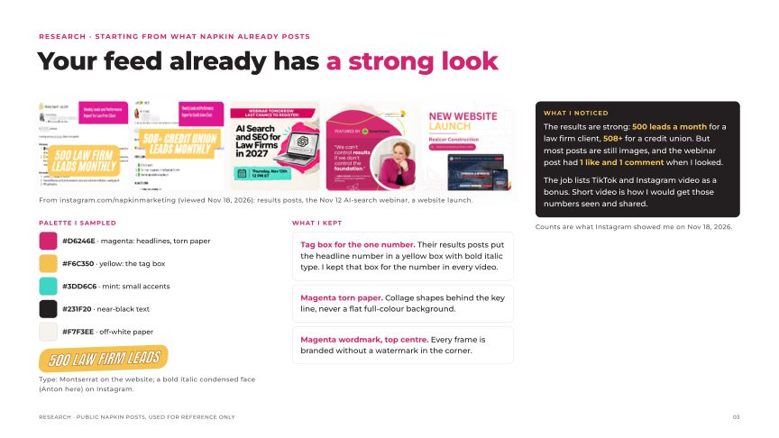
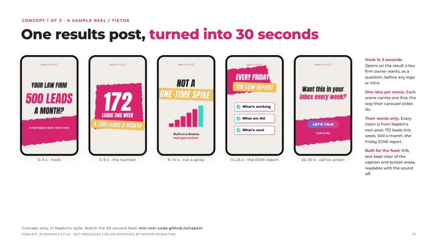
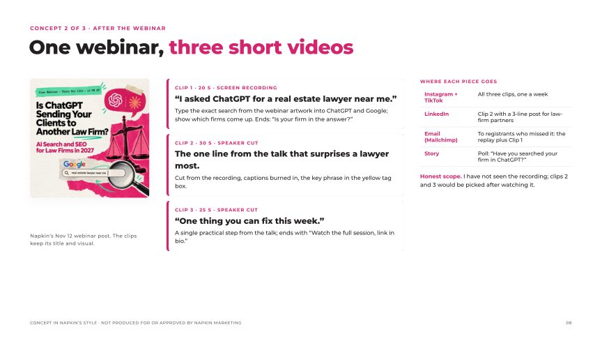
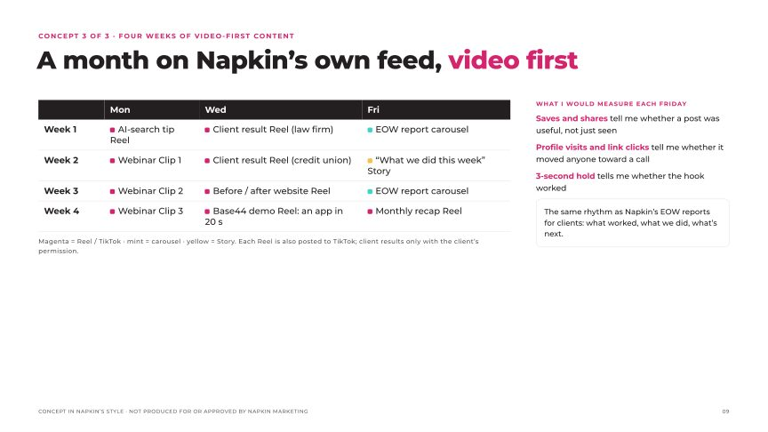

I make short videos that sell a product and plan the posts around them. This page holds a 30-second Reel concept in Napkin’s style, two of the Memo Clock videos I edited, and my full portfolio.
A Reel / TikTok concept built only from Napkin’s own Instagram post about a law-firm client: 172 leads this week, 500 a month, and the Friday EOW report. Vertical, captions on screen, readable with the sound off.
Memo Clock is a paid iPhone and iPad study app from our three-person team. I came up with the launch plan, edited 14 promo videos across three releases and designed the app’s front end. 175 copies sold; 873 likes and 211 followers on our Xiaohongshu account; peak #17 in Education on the China App Store.
Research on Napkin’s feed, the Reel storyboard, a webinar-to-clips plan and a video-first month.



